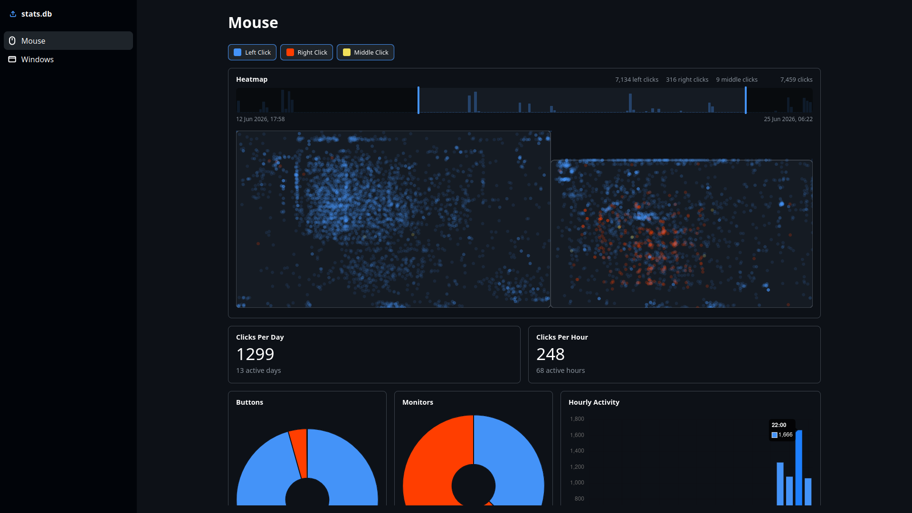
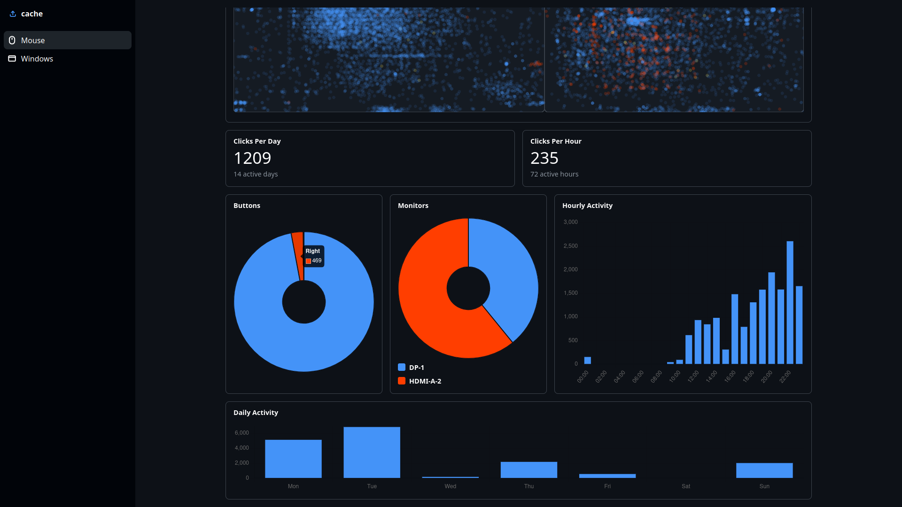
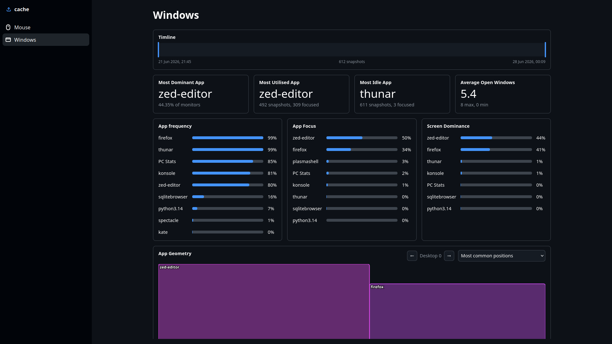
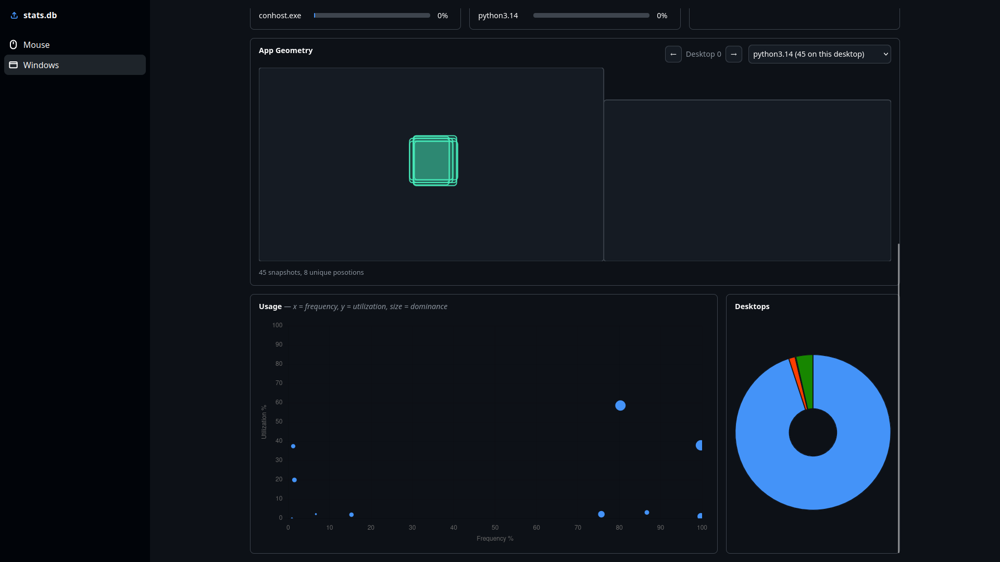

One day a question crossed my mind; which monitor do I use most? My first thought was to create a heatmap of every click, but before I could even start I was hit with more questions. What app do I spend the most time in? How many times a day do I right click? What hour am I most active?
To answer these very important questions, I created PC Stats. It has 2 parts: a Linux app that logs every click and records the names and positions of open windows every five minutes, and a dashboard website to display that data in an interesting and interactive way.
The collector app is written in Python. It runs quietly in the background
while you use your computer, and has a simple Qt UI. You can pause and play
the data collection at any time, and configure the update frequency. The
data is stored in a SQLite database at ~/.local/share/pc-stats/stats.db.
When you run it for the first time, it stores your monitor configuration in a
table, which is later used by the dashboard.
| monitors | ||
|---|---|---|
| Column | Type | Purpose |
| id | INTEGER | Monitor id used by the dashboard. |
| name | STRING | Display name reported by the system. |
| x | INTEGER | Monitor x offset in the full desktop layout. |
| y | INTEGER | Monitor y offset in the full desktop layout. |
| width | INTEGER | Monitor width in pixels. |
| height | INTEGER | Monitor height in pixels. |
There are two aspects to mouse tracking: detecting the click, and finding
its position.
To detect when a mouse button is pressed, the collector reads input events
directly from /dev/input/. (I tried to use modules like
pynput to listen for inputs, but these are blocked on Wayland systems for
security reasons) It scans the directory for mouse-like devices and reads
inputs from all of them, to accommodate for setups with multiple mouse
inputs. This also helps handle disconnects more gracefully.
When an input event is received, the collector has to find its coordinates.
This is the hardest part of tracking the mouse. Once again, Wayland blocks
most methods of getting the position. Reading from /dev/input/
only gives raw relative motion from the sensor. This can't be used to
recreate the mouse's position, because it doesn't account for cursor
acceleration. The solution to this was writing separate implementations
for each of the most popular Window Managers.
The way I decided to get the cursor position on KDE was to create a
custom KWin script and read its output. The script contains a couple lines
of JavaScript to print the cursor's position, and is saved to
~/.local/share/pc-stats/scripts/mouse_pos.js on first run.
Using dbus, the collector sends commands to KWin telling it to load the
script, start it, and stop it. It then reads the outputted position from
the system journal and prepares it for storage.
Hyprland exposes a local IPC socket for controlling and querying the
compositor. The collector finds the socket using Hyprland's instance
signature, connects to it with a Unix domain socket, and sends the
cursorpos command. Hyprland responds with the cursor position as
an x,y pair.
These two are much simpler. Using Xlib, the collector can query the mouse's position directly, no commands or scripts required.
Once the position is found, the coordinates are added to a dictionary alongside the button and the timestamp. Instead of being stored straight away, each click is added to a buffer. At regular intervals, the buffer is flushed and the clicks are stored in the database.
| clicks | ||
|---|---|---|
| Column | Type | Purpose |
| id | INTEGER | Unique click id. |
| timestamp | REAL | Unix timestamp for when the click happened. |
| x | INTEGER | Global x position. |
| y | INTEGER | Global y position. |
| button | STRING | LEFT, RIGHT, or MIDDLE. |
Window tracking works differently from mouse tracking. Instead of listening for events, the collector takes a snapshot of the desktop every few minutes. The data is stored across two tables: one for the snapshot details, and another for the individual windows.
| window_snapshots | ||
|---|---|---|
| Column | Type | Purpose |
| id | INTEGER | Unique snapshot id. |
| timestamp | REAL | Unix timestamp for when the snapshot was taken. |
| active | STRING | Application that was focused during the snapshot. |
| current_desktop | INTEGER | Current desktop or workspace id. |
| windows | ||
|---|---|---|
| Column | Type | Purpose |
| ssid | INTEGER | Snapshot id linking this window to window_snapshots. |
| name | STRING | Application or window class name. |
| pid | INTEGER | Process id when available. |
| desktop | INTEGER | Desktop or workspace the window is in. |
| x | INTEGER | Window x position, or -1 when minimized. |
| y | INTEGER | Window y position, or -1 when minimized. |
| width | INTEGER | Window width, or -1 when minimized. |
| height | INTEGER | Window height, or -1 when minimized. |
KDE Wayland uses a KWin script, similar to the mouse position system. This script loops through every visible app, filters out hidden and non-normal windows (taskbar, wallpaper, etc.), and prints a dictionary containing all the above data. It then prints a final dictionary containing the active window and the current desktop. The script is then run and the output is read from the journal, same as before.
On X11, the collector can again query the window manager directly with Xlib.
It reads EWMH properties like _NET_CLIENT_LIST,
_NET_ACTIVE_WINDOW, _NET_CURRENT_DESKTOP,
_NET_WM_DESKTOP, and _NET_WM_PID. For each client
window, it gets the app name, process id, desktop, and geometry, then marks
whichever window matches _NET_ACTIVE_WINDOW as focused.
Hyprland exposes most of this information through hyprctl. The
collector runs hyprctl clients -j to get the open windows,
hyprctl activewindow -j to find the focused app, and
hyprctl activeworkspace -j to find the current workspace. Since
the responses are JSON, the collector can parse them directly instead of
scraping text output.
Sway uses swaymsg. The collector reads the full tree with
swaymsg -t get_tree -r, walks through the workspace nodes, and
collects normal windows from the tree. It also reads
swaymsg -t get_workspaces -r to find the focused workspace.
This gives the collector the same basic snapshot shape as the other
backends, even though the source API is different.
The dashboard is a static Svelte app. The SQLite database is loaded and parsed directly in the browser with sql.js. Imported databases are saved in cache with IndexedDB so the same file can be reopened automatically.
The main feature of the mouse section is the heatmap. Each click is drawn over a layout of the monitors stored earlier. It also has filters for time period and button. The rest of the charts are drawn using chart.js, including: a button pie chart, a monitor pie chart, an hourly activity chart, and a daily activity chart.


The window section features a visualization of the most common positions for every app, to display your usual setup. It also calculates app frequency, app focus percentage, screen coverage, and more.


In summary, I use my left monitor more. I enjoyed this project a lot, and I learned a lot while making it, specifically about SQL and web development. I might expand this in the future, with more charts, more filters, and more data, but I think its time to work on other projects for now.